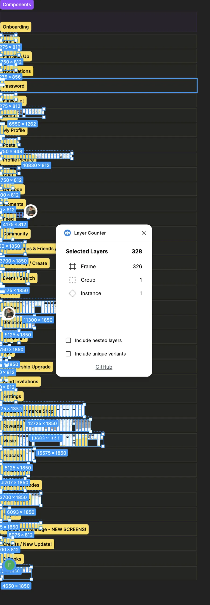
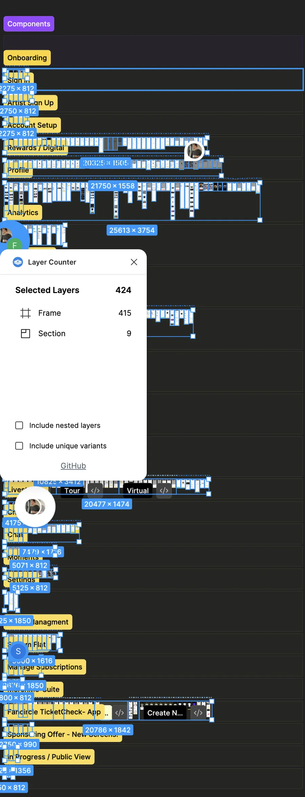
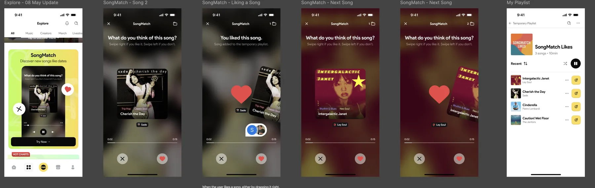
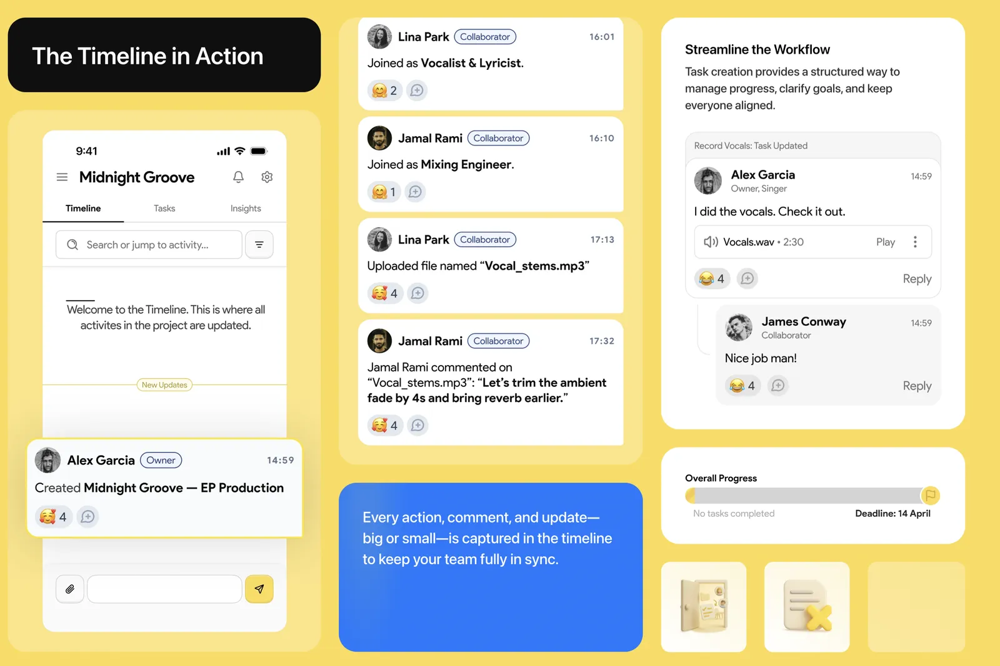

My part
I co-shaped the product with the founder and designed both apps end to end, including SongMatch and Creative Room, plus the prototypes and decks used with investors and artists. The founder set the vision, a project manager ran delivery, and a team that grew to 5 developers and QA built it.
The problem
Artists earn about 0.003€ per stream, and social media gives them reach but no real relationship with the fans who were there first. Most fans say they would support their artists directly if there were a good way to do it.
Two apps, one product
Fans want to discover and feel close. Artists want to publish, reward and understand their community. One interface for both would have made each side worse, so I designed two role-based apps on one shared system: 300+ frames for fans, 400+ for artists.


SongMatch: discovery like dating
Scrolling a catalogue is tiring. I borrowed a gesture everyone knows: swipe right to like a song, left to skip. Every like lands in a playlist the fan can keep.

Creative Room: feedback pinned to the moment
"The middle part feels off" wastes everyone's time. In Creative Room, collaborators select part of the waveform and leave a note there, SoundCloud style, and a timeline keeps every upload, comment and task in order.

Outcome
- v1.0 designed and built for iOS and Android.
- 50+ artist commitments before launch, won with the app prototypes and pitch decks I designed.
- A registered EU trademark.
The product did not take off. The company ran out of money before it found its users.
What I'd do differently
Our scope grew faster than the team could build, and the core loop was never tested on its own. Today I'd push for a tight MVP around that one loop, agree on a single success metric, and put it in front of real fans first. Saying no to features is part of the job.